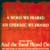
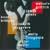

Tuning Audiences In To Diverse Programming
IdentityHome Box Office creates and/ or purchases movies for first run to their own subscribers. These need to be promoted and advertised to: 1) attract more cable operators to Home Box Office and 2) attract more viewers to HBO.
We recommended HBO create a proprietary product with an umbrella name (like a "Hallmark Hall of Fame" or a "Masterpiece Theatre," but more commercial) that these movies could be gathered under and that would represent a certain entertainment value and quality that viewers could look for and demand. We named these made-for-cable-movies "HBO Premiere Films" and, later, "HBO Pictures," when the latter became legally available. We later created HBO Films for the smaller, shorter more artful films.
Advertising
We have created dozens of campaigns for HBO's original movies which show first to their subscribers, Advertising runs on-air and in print, and the cable operators use the print ads for local TV Guides and local newspapers.
Some of our most recent campaigns include: And The Band Played On and Barbarians At The Gate.